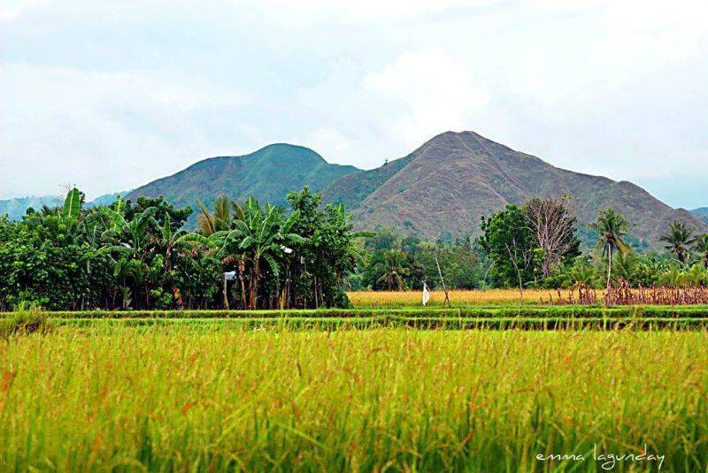
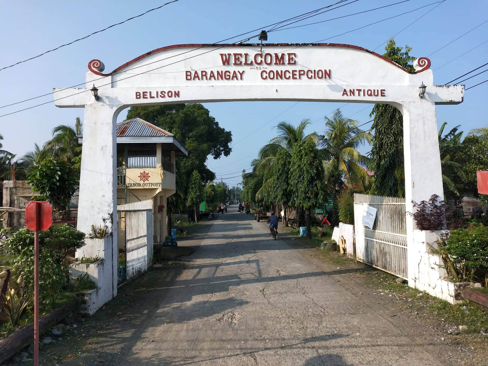
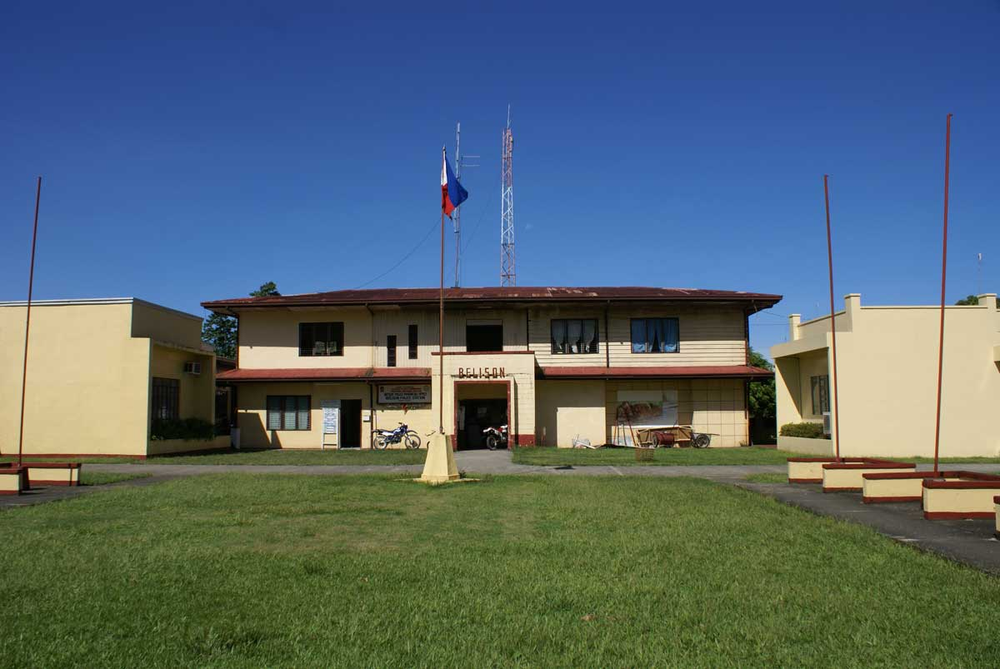
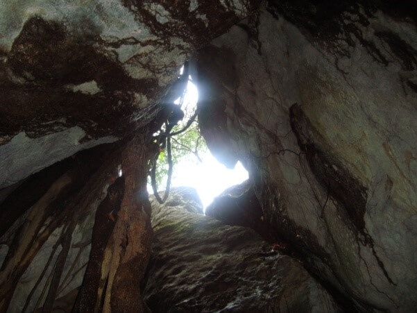

About Belison
Less than fifty years ago the town of Belison was merely a barangay in the larger municipality of Patnongon, adjacent to the north. Belison barangay leaders and Manila-based Belisongnons as well, mapped out a petition requesting the national government to make Belison an independent town. The petition was brought to Malacañan Palace on March 10, 1961, and by virtue of Presidential Executive Order No. 421 signed by President Carlos P. Garcia, Belison was declared a municipality - the smallest and the youngest in the Province of Antique.
During World War II, Japanese war submarines and other marine craft found the shores of Belison easy entry points to Panay, and invaded the Western Visayas in that location. People still tell of the fear created by these foreign intruders, and also of the bravery of those who decided to resist, creating rebel strongholds in the mountainous areas above the municipality.
When the Japanese air raids would bomb Belison and the nearby communities, families from all around fled to Guinobatan Cave, high in the hills of barangay Buenavista. And when the American forces came, they too used the smooth sea landing in Belison, bringing relief food supplies to Belisongnons, and troops to attack the Japanese occupying forces. They often used local homes in the area to hide in while planning their strategies for assault against the enemy, and enlisted the help of brave men and women to carry out their plans.
Where is Belison?
Southwestern part of Panay Island in Western Visayas Region Coordinates:10.838018747208487, 121.95925622788897
Patnongon (north), San Remegio (east), Sibalom and San Jose (south) which is the capital town of the Province of Antique.
Belison and its people
How BIG is it?
19.78 km2 (7.64 sq mi)
- Borocboroc
- Buenavista
- Concepcion
- Delima
- Ipil
- Maradiona
- Mojon
- Poblacion
- Rombang
- Salvacion(KotKot)
- Sinaja
Patnongon (north), San Remegio (east), Sibalom and San Jose (south) which is the capital town of the Province of Antique.
Belisongnons way of life
- Agriculture
- Trading
- Tourism
- Fishing/Fisheries
- Rice
- Corn
- Fish
- Vegetable
- Poultry
- Handicraft
- Home-made food/items
Climate
Belison has a warm climate that has 2 seasons, the dry and the wet or rainy season. Dry season begins from December and ends in May. with rainy season starting from June to November.
Hydrology
The sulu sea, which is the western adjacent water body of belison, is near the coastline for big ships. The southern part of Belison is traversed from the east to the west by the sibalom river (Biggest in the province).
Tidal Current Pattern
Belison being located in the west of Sulu Sea has a mixed tidal cycle, characterized by two high tides and two low tides which are unequal in height occurring about 12 hours and 25 minutes apart.
Topography
The topography of Belison is a mixture of flat and hilly terrain. The hilly and mountainous part of Belison is located on the east, composing two barangays, the barangay Buenavista that is located on the mountaintop and Mojon that is located on hilly area.
Marine Resources
Belison has a warm climate that has 2 seasons, the dry and the wet or rainy season. Dry season begins from December and ends in May. with rainy season starting from June to November.

Municipal Seal
The Belison municipal seal was created to commemorate the agricultural heritage of the town, in order to preserve the legacy of the original settlers in the region. It depicts three mainstay agricultural activities:
- The top image represents fishing and the bounties of the neighboring sea.
- The lower left portion is the harvesting of sugar cane, its processing muscovado sugar.
- The lower right depicts tilling of the lowlands for the planting of rice and other grains and vegetables.
Surrounding the great triangle are eleven stars, one representing each barangay in the town. The largest star at the bottom is for the Poblacion. Their strength lies in their connectivity to one another, and in their closeness to the traditions of the past.
Christopher Piccio
Mayor
Christopher Piccio is a Filipino politician. He is currently serving as the mayor of Belison, a municipality of Antique Province in Western Visayas Region, Philippines.
Darrell Dela flor
Vice Mayor
Darrell Dela Flor is a Filipino politician. He is currently serving as the mayor of Belison, a municipality of Antique Province in Western Visayas Region, Philippines.
Noli Evangelsita Pagunsan
Tourism Officer
Noli Evangelsita Pagunsan the tourism officer of the municipality of Belison.
Religious Fiestas
Aside from the municipal festival celebrated by the whole municipality, every barangay of the town has its religious fiesta set aside to remember particular patron saints. Fiesta is a special time with friends, a time for fellowship, food, and lots of activities. They usually feature a mass and a procession. Long after the religious ritual is completed, people eat, drink, and enjoy the rest of the day. There are dancing during the night and other colorful activities to make the people attending the fiesta enjoyed. Most often people are busy for weeks or even months preparing for them. It is surprising, how even those facing many problems in their day-to-day life set them aside and participate in the festivities. Even those constituents across the miles find time to go home in their respective barangay just to witness their barangay’s religious fiesta. Below is the timeline of religious fiestas in every barangay together with their patron saints.
Rombang
San Antonio Abad
January 15-16
Ipil
ST. Teresita & St. Ana
January 19-20
Mojon
San Roque
January 29-30
Poblacion
Our Lady of candles
February 1-2
Maradiona
St. Blaise
February 2-3
Buenavista
Nuestra Señoria De Caysasay & San Lorenzo Ruiz
February 6-7
Delima
San Remedios
2nd Saturday and Sunday of february
Sinaja
Santa Salvacion
February 18-19
Salvacion
Santa Salvacion
May 8-9
Borocboroc
Santa Guia
December 5-6
Concepcion
Immaculate Concepcion
February 7-8
Intangible Assets (Places)
Lublub Ati
The Lublub Ati is considered as place name in the municipality located at Poblacion, Belison, Antique densely covered by trees and bamboos alongside by the Belison River. The name itself suggests that the place served as first home for the “Aetas or Ati” living in the municipality. Unpublished accounts that long before the arrival of the Spanish friars, Ati or Aetas settled in the place alongside the Belison River where sources of their food is abundance and to make themselves separated from the natives of the place. However, during the early part of 17th century, this simple community was raided frequently by the fast and furious Moro pirates riding their vinta boats. Some of the frightened natives seek refuge in this place where the Atis settled. As the attacked frequently happened, the native from the main part of the land made the place as their hiding place together with the Aetas. Later on, the Atis abandoned the place as they wandered looking for food and they have not returned in the place since they abandone it. The Lublub Ati also served as the hiding place of the Belisongnon as they seek refuge from the hands of the Japanese soldiers during the World War II. Today, a performing arts guild was organized by a certain local artist bearing the name of the place, the Lublub Ati Performing Arts Guild (LAPAG).
Image by: Aklan Performing Arts Network – APAN
KotKot
“Kotkot” is a vernacular term for erosion or intrusion. It is the early name of now, Barangay Salvacion. Long before the arrival of Spanish friars in the Province of Antique, unstinted civilization flourished in the coastal areas of what is now Belison. Unpublished accounts say that part of Belison called Kotkot was always eroded by coastal water. In one instances of the flood, a certain resident found the graven image of Santa Salvacion floating in the flood water. He took the graven image and placed it in their home. Since then, flooding in the place stopped and the residents change the name of the place into Salvacion. To the local busalian (mystics), the deep cave of Mt. Guinobatan stretch down through Kotkot via underground passages carrying fresh water that wells up in an undersea spring, or sawang, in the open ocean.

Bagumbayan
The term “Bagumbayan” means a new barrio or barangay. This is the old name of Barangay Concepcion today. Once upon a time, the place was a part of Barangay Rombang and was known as “Durog”. The family of a soldier who was the father of a certain Tiburcio was the first settler in the place. However, as time pass by many families join them and organization was organized to manage the sitio. In 1912, a great flood devastated the place destroying all houses as well as plants and other properties. Tiburcio and his wife Clementia, has a portion of land in a place called “Puntod”. They invited their relatives and friends to transfer and settle in that place since it is far from the river. Another organization was formed to manage the place and the people called their new place “Bagumbayan”. A chapel was built for worship and prayers with Immaculate Concepcion as the patron saint. Later, the people agreed to change the name of their new barrio into Concepcion, to venerate the name of Nuestra Señora La Immaculada Concepcion, their patron saint. From that time on, Bagumbayan was change into Concepcion, one of the eleven barangay of the municipality.
Tangible Assets (Stories)
Mythical Origin of Belison
Unpublished accounts say that during the Spanish era, a renowned busalian (or mystic) by the name of Kapitan Tinong (or Tan Tinong) named the mountainous region where Mt. Guinobatan dominantly stands Buenavista; Spanish for “good view.” Accounts have been told of this famous busalian, Tan Tinong who was captured by Spanish soldiers. Charged with heresy and witch doctor, they decided to put him to death. They tied him up firmly and placed him inside a large abaca (burlap) sack and thrown into the sea. To the amazement of everyone he slipped out of the ropes and was saved by a floating wooden statue… a carved saint. After his ordeal, he placed the saint in a small chapel in his barangay, Buenavista. Today people still venerate Nuestra Señora de Caysasay, their patron saint.
Tigadlum Kang Guinobatan
Unpublished accounts say that during the Spanish era, a renowned busalian (or mystic) by the name of Kapitan Tinong (or Tan Tinong) named the mountainous region where Mt. Guinobatan dominantly stands Buenavista; Spanish for “good view.” Accounts have been told of this famous busalian, Tan Tinong who was captured by Spanish soldiers. Charged with heresy and witch doctor, they decided to put him to death. They tied him up firmly and placed him inside a large abaca (burlap) sack and thrown into the sea. To the amazement of everyone he slipped out of the ropes and was saved by a floating wooden statue… a carved saint. After his ordeal, he placed the saint in a small chapel in his barangay, Buenavista. Today people still venerate Nuestra Señora de Caysasay, their patron saint.
